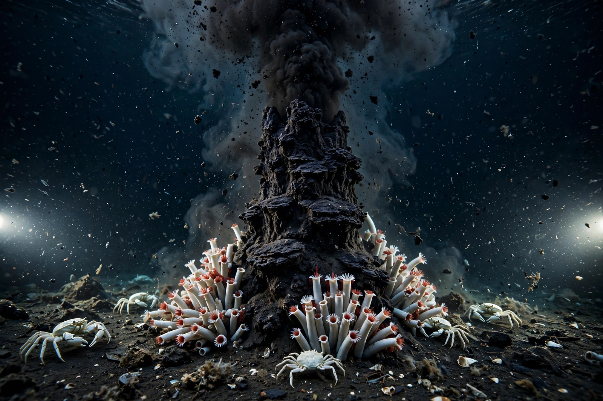

Abiogenesis

Abiogenesis is the natural process by which life arises from non-living matter, such as simple organic compounds. It is the prevailing scientific idea for the origin of life on Earth, thought to have occurred between about 4.3 and 3.7 billion years ago, and is distinct from the spontaneous generation of complex organisms disproved by Louis Pasteur.
Early Earth conditions
The young Earth had oceans, a reducing or weakly reducing atmosphere, volcanic activity and frequent impacts. Energy from lightning, ultraviolet light and hydrothermal vents could drive the synthesis of organic molecules such as amino acids.
The classic Miller–Urey experiment of 1952 showed that amino acids form readily when a simulated early atmosphere is exposed to electrical discharge. Later work found that meteorites also deliver organic compounds, and that deep-sea alkaline vents provide natural proton gradients similar to those cells use.
From chemistry to cells
A widely discussed scenario is the ‘RNA world’, in which self-replicating RNA molecules preceded proteins and DNA, because RNA can both store information and catalyse reactions. Competing or complementary ideas emphasise metabolism-first cycles in mineral pores, or lipid vesicles that grew and divided, enclosing chemistry in the first protocells.
The last universal common ancestor (LUCA) already had DNA, the genetic code and ribosomes, so abiogenesis concerns the steps before it. Research continues through laboratory protocell experiments and the study of hydrothermal systems.